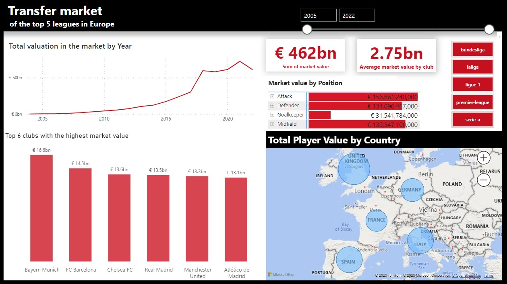
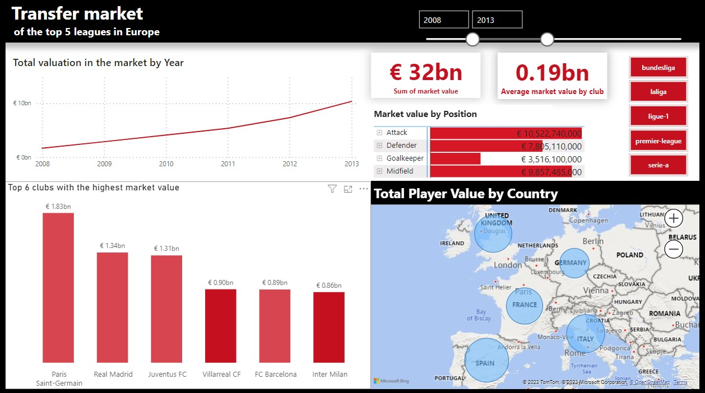
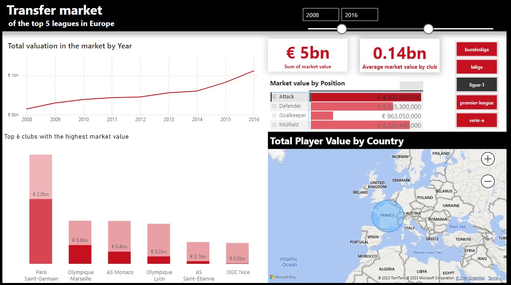
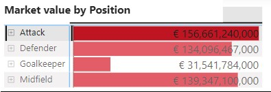

Footbal Transfer Market Analysis Using Power BI
This project aimed to enhance Power BI proficiency by analyzing football transfer market data across the top 5 European leagues from 2005 to 2022 and displaying it in a dashboard. The project involved data cleaning, transformation, modeling, and visualization to derive actionable insights. I took the dataset from Kaggle, a platform known for sharing datasets contributed by others.

Challenges and Questions Before the Project
- How to effectively analyze extensive football transfer market data from multiple leagues during nearly two decades?
- What trends and insights can we uncover without specific research questions to guide us?
Data Preparation and Modeling
- Cleaned and transformed a dataset consisting of 5 tables (players, player valuation, competitions, clubs, appearances).
- Established relationships and primary keys to create a unified dataset.

Visualizations
- Created Line chart, matrix, map and Cards.
- Implemented interactive slicers for filtering by year, league, position, and team.



Findings
- Noted a significant increase in market value from 2015 to 2021, peaking in 2017-2018, followed by a decline in 2021-2022.
- Identified Bayern Munich as the club with the highest market value.
- Recognized that attacker positions have the highest market value.
- Demonstrated the Premier League's(United Kingdom) highest market value.

Business Insights
- Positional Value: Acknowledging the premium value of attacker positions can assist clubs in strategic player recruitment.
- League Dominance: Recognizing the financial prominence of the Premier League can attract potential investors and advertisers.
- Commercial Attraction: The Premier League's financial strength makes it an attractive option for investors and advertisers.